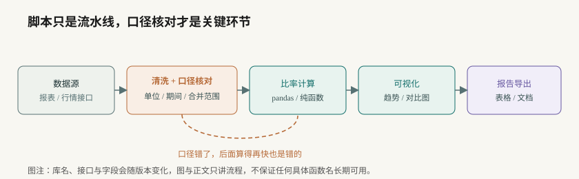
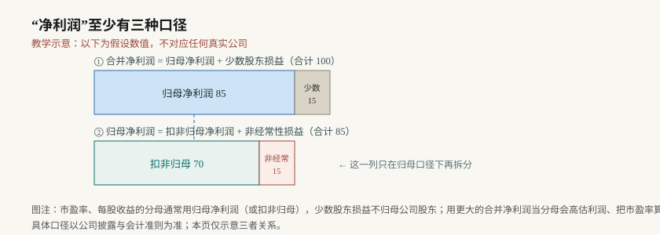

Python 财报分析：把重复劳动自动化
当公司数量、年份或数据源变多，手工复制粘贴会成为瓶颈。Python 的价值是批量、可复现、可自动化；但脚本算得再快，也无法替你确认口径——分析中最常见的错误恰恰出在分母上。
Python 的定位
Python 不取代表格软件：临时查看、手工勾稽用表格更快；公司数量多、需要重复运行、需要把口径写成代码固定下来时，Python 更合适。两者的分工是“人做判断、脚本做重复”。

预期管理：学 Python 不是为了“一键生成结论”。脚本能保证同一口径下反复算得一致，不能保证口径选对；也不要把任何库的输出当成已经核对过的数据。
工具链与责任边界
常见工具分为两类：数据接口（获取报表与行情）与数据处理/绘图（计算与可视化）。它们都是第三方库，接口名称、可用性与数据质量会随版本变化。
| 工具 | 大致定位 | 使用时要核对什么 |
|---|---|---|
| akshare / baostock | A 股数据接口（开源、免费为主） | 字段含义、单位、复权与报告期口径；与年报原文抽查比对 |
| tushare | A 股数据接口（部分接口需权限或积分） | 同上；不同数据源口径可能不一致 |
| yfinance 等 | 境外市场数据 | 币种、会计准则（IFRS/US GAAP）与期间差异 |
| pandas | 表格数据处理 | 数据类型、缺失值与索引对齐（易静默出错） |
| matplotlib / seaborn | 绘图与可视化 | 中文字体与坐标轴单位；图形不能代替数据核对 |
边界提醒：这些库不是会计准则或监管披露本身，它们只是搬运与加工数据的工具。任何进入报告的数字，都应以公司年报、交易所披露或监管网站为准，并记录取数日期。
数据与口径核对
获取财务数据的流程通常分三步：安装依赖、调用接口取回表格、把长表整理成“年份 × 科目”的宽表。下面是流程示意，接口名称与参数会随版本变化，不能照抄当作保证可用的代码：
# 流程示意（库名/接口名可能随版本变化）
df = fetch_income_statement(stock_code) # 取回长表
annual = df[df['报告期'].str.endswith('12-31')] # 只留年报
wide = annual.pivot_table(index='报告期', columns='科目', values='数值', aggfunc='first')
print(df.columns) # 第 1 件事：打印列名与口径
取回数据后的第一件事不是算比率，而是核对口径。“净利润”至少有三种含义，用错分母会让市盈率、每股收益、ROE 整体偏掉：

- 合并净利润：含少数股东损益，反映集团整体。
- 归母净利润：只属于母公司股东，是估值最常用的口径。
- 扣非归母净利润：再扣除一次性损益，反映主业盈利能力。
除口径外，还要核对单位（元/万元/亿元）、期间（年报/季报/滚动十二个月）与合并范围。最可靠的做法是：拿脚本算出的一个关键科目，与公司年报原文逐一比对。
比率计算与可视化
比率的优点是可以批量计算并复现。下面是一段不依赖任何外部数据源的纯函数示意，可直接在本地 Python 里运行并验证结果：
def ratios(revenue, cogs, net_profit, avg_assets, avg_equity):
if revenue <= 0 or avg_assets <= 0:
return {'毛利率': None, '净利率': None, 'ROA': None, 'ROE': None}
if avg_equity <= 0:
return {'毛利率': None, '净利率': None,
'ROA': None, 'ROE': None} # 负权益时 ROE 失效
return {
'毛利率': (revenue - cogs) / revenue,
'净利率': net_profit / revenue,
'ROA': net_profit / avg_assets,
'ROE': net_profit / avg_equity,
}
print(ratios(1000, 600, 120, 2000, 800))
# 毛利率 0.4，净利率 0.12，ROA 0.06，ROE 0.15
可视化把趋势画出来。绘图只负责呈现，不负责发现错误：坐标轴单位、基数（例如营收用“亿元”还是“元”）与是否同口径，都需人在图外核对。对比多家公司时，先把口径拉平再画在同一张图上。
不要把结果自动当成结论：比率算错往往不是公式错，而是输入口径错（如把合并净利润当作归母净利润、分母用了期末而不均余额）。脚本里的防御式写法（分母为 0 或负时返回不适用）比“算出个数字”更重要。
自动化脚本
自动化的核心是把重复步骤串起来：取数 → 清洗 → 算比率 → 画图 → 导出。下面只给出结构，不给出可运行的完整实现（因为它依赖具体数据源，而数据源接口会变）：
def report(stock_code):
raw = fetch_reports(stock_code) # 1. 取数
wide = clean_and_check(raw) # 2. 清洗 + 口径核对
r = compute_ratios(wide) # 3. 比率
save_charts(r, stock_code) # 4. 图表
export_workbook(r, f'{stock_code}.xlsx') # 5. 导出
其中第 2 步不能省。一个可执行的自动化流程应包含：
- 断言：关键科目缺失、单位异常、分母为负时主动报错，而不是静默产出错误数字。
- 可追溯：记录数据来源、取数日期与口径声明，写入报告页脚。
- 交叉比对：至少用一个关键科目与年报原文核对，或对比两个数据源。
关于把 F-Score 等评分接入脚本：可以自动算分，但阈值与权重来自特定样本（详见第 27 章），脚本只能保证计算一致，不能保证阈值适用于当下；评分结果应作为筛查优先级，而不是自动买卖信号。
口径差异工作台
默认演示（合并净利润 10.0、归母净利润 8.5、扣非归母净利润 7.0，单位一致）可手工复算：少数股东损益 = 1.5，占合并净利润 15%；非经常性损益 = 1.5，占归母净利润 17.6%。
三种口径的差额
三个金额需同一期间、同一合并范围与单位；差额为负时需核查输入或口径。
这个工作台只做减法与除法。差额大不等于有问题：少数股东损益占比高可能只是子公司结构复杂，非经常性损益大可能来自真实处置；关键在于报告里声明用了哪个口径。
核查清单与自测
取数后先打印列名与单位，再把一个关键科目与年报原文核对。
净利润分母声明口径：归母还是扣非，期间是年报还是 TTM。
比率分母使用同期平均余额（如 ROE 用平均权益），不做期末数替代。
脚本对分母为 0 或负、科目缺失要主动报错，不静默输出。
把数据来源与取数日期写进报告；不把库输出当成已核实数据。
自测一：脚本算出 ROE = 15%，是否可以直接用？
不能直接用。需先确认三个前提：分子是归母净利润还是合并净利润、分母是期末权益还是平均权益、权益是否为正。负权益时 ROE 直接失效，必须声明不适用。
自测二：两个数据源取到的营收不一致，该怎么办？
先回到年报原文核对，确认是口径（合并范围、追溯重述、单位）差异还是数据源误差；在此之前不应把任一数字写进报告。
结论：Python 把重复劳动自动化，把口径固定成代码。它顺便也把口径固化在了代码里——所以口径核对才是脚本里最值得花时间的那一步。
依据与边界
本页所有数字、代码与图例均为教学示意，不指向任何真实公司，也不构成投资建议。文中提到的第三方库与接口不是会计准则或监管披露，其名称、参数与数据质量会随版本变化；本页不对任何库作推荐。
报表项目与利润子项目的定义以财政部《企业会计准则》（含合并财务报表、财务报表列报等准则，以最新版本为准）为准；披露要求以证监会与交易所现行规定为准。